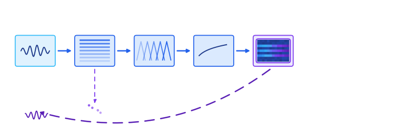
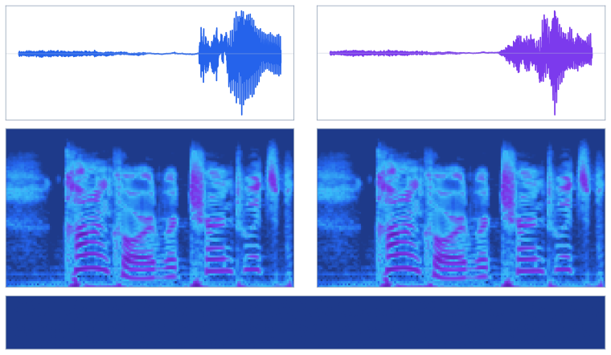
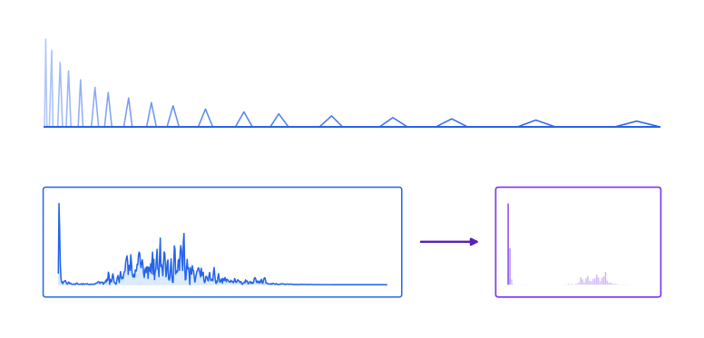

Why \(x \to \text{mel} \to \hat{x}\) is lossy, why the literature built vocoders to cope, and when
that gap is worth closing.
Erik Quintanilla · June 2026
Using a real LibriSpeech-derived clip8, every TTS and voice pipeline eventually asks the same question: can I encode audio to log-mel,
manipulate it, and decode back without loss? No. The forward map
is cheap and deterministic; the reverse map is not an inverse. Phase is discarded, frequency bins
are merged, and many waveforms share the same mel. That is why the field invented vocoders:
learned decoders that guess the information mel never stored.
\[
\Phi:\ x(t)\ \longmapsto\ S \in \mathbb{R}^{M \times T},
\qquad
\nexists\ \Phi^{-1}\ \text{s.t.}\ \Phi^{-1}(\Phi(x)) = x
\]

Top (blue): encode \(x \to |X| \to ES \to \log\). Dashed return (violet):
any decode \(\hat{x} \neq x\). Branching marks information discarded before mel.
1. What mel throws away
Write the forward map as composition of three steps. Magnitude STFT drops phase; mel projection
compresses linear frequency bins; log compression is invertible alone but cannot undo the first two.
\[
|X(f,t)| = \bigl|\mathrm{STFT}(x)\bigr|,
\qquad
M = E\,|X|^{\odot 2},
\qquad
S = 10\log_{10}\!\left(\frac{M}{\mathrm{ref}}\right)
\]
Stage
Map
Why \(\Phi \neq \mathrm{id}\)
Magnitude
\(x \mapsto |X|\)
Phase discarded; \(\infty\)-many \(x\) share one \(|X|\)1
Composed, audio\(\to\)mel\(\to\)audio cannot be lossless even when \(S\) is copied exactly.
Take a real LibriSpeech clip and resynthesize the same magnitude with random phase: waveforms diverge, mel matches. Formally,
\(\Phi(x_1) = \Phi(x_2)\) while \(x_1 \neq x_2\).

Top: original (blue) vs phase-scrambled (violet) waveforms.
Middle: two identical log-mel panels. Bottom: zero-difference strip.

Top: mel filterbank \(E\) over the linear frequency axis.
Bottom: linear spectrum and compressed mel energy shown in separate coordinate panels.
Mel projection is a rank-deficient linear map: \(E^{+}E \neq I\), so detail in the orthogonal
complement of \(E\)’s range space is discarded and cannot be read back from \(S\) alone.
2. The naive round-trip still fails
Before neural vocoders, the classical decode was explicit: invert log, pseudo-invert the mel bank,
estimate phase with Griffin–Lim2, then iSTFT. Even at zero mel
error (\(\|S - \Phi(x)\| = 0\)), the output is metallic: mel was never a container for the full signal.
Tacotron 23 split the problem: an acoustic model predicts mel;
a WaveNet vocoder maps mel to waveform. The vocoder exists because mel\(\to\)wave is
one-to-many4: one tile \(S\) labels a family of
signals differing in phase and null-space detail. MelGAN5 and
HiFi-GAN6 replaced Griffin–Lim with fast learned decoders.
PhaseAug4 rotates phase during training so GAN vocoders stop
memorizing a single ground-truth waveform per mel. Diffusion vocoders sample from the same
equivalence class rather than chasing one canonical inverse.
Mel reconstruction loss is a poor proxy for perceptual match: equal mel RMSE can still yield
different resynthesized timbres7. Judge decoders by ear, not
pixel error alone.
Three distinct preimages \(x_1, x_2, x_3\) (blue) collapse to one mel \(S\) (violet center).
Dashed outbound paths: different vocoders \(G_{\theta_i}(S)\), a design choice, not a unique inverse.
4. Is perfect inversion worth solving?
Treat this as a product question. Perfect lossless round-trip (\(\hat{x} = x\)) fights the
representation: mel discards detail on purpose.
Don’t bother (forward mel only). ASR, speaker ID, embeddings, speech LLMs
that never synthesize. You need \(\Phi(x)\), never \(\Phi^{-1}\).
Worth good-enough synthesis. TTS, voice conversion, dubbing, neural codecs.
Vocoder quality is the product. HiFi-GAN-era decoders ship; bit-exact recovery does not.
Perfect round-trip: wrong goal. Mel was designed to discard non-perceptual detail;
bit-exact \(\hat{x} = x\) fights the representation.
Skip mel when you can. End-to-end wave models bypass \(\Phi\) entirely if you
control the full stack.
5. Why we don’t need the phase
The flip side of all this: discarding phase is not a reluctant compromise, it is the right call.
The STFT shift property shows why. Delay the signal by \(\tau\) and every bin picks up a pure phase
factor:
The magnitude (hence the mel) is left exactly unchanged, while the phase of every bin rotates by
\(-2\pi f\tau\). So a sub-sample shift no listener can hear rewrites the entire phase spectrum. Three
consequences make phase a poor thing to store:
Not shift-invariant. Perceptually identical inputs produce wildly different phase
but identical magnitude. A feature should be stable to inaudible time shifts; phase is not.
Perceptually weak. The ear is largely insensitive to absolute phase (Ohm’s
acoustic law), so the \(F \times T\) phase values mostly encode clock alignment, not timbre.
Redundant anyway. For an overlapping STFT a self-consistent phase is heavily
constrained by the magnitudes of neighboring frames, exactly what Griffin–Lim
exploits2. Phase is both unstable and partly recoverable.
Storing phase means committing to one arbitrary alignment from a perceptually equivalent continuum.
Keeping \(|X|\) and letting a vocoder re-pick a self-consistent phase at decode time is the better
trade, which is precisely the job vocoders do.
Practical checklist
Encoding: \(x \to S\) is well-defined. Match frontend params across train and deploy.
Decoding: budget for \(G_\theta\) or accept classical artifacts. Mel L1 alone will not save you.
Training: treat \(S \to x\) as one-to-many4;
phase augmentation and multi-resolution STFT losses help.
Golden nugget. You cannot round-trip audio through log-mel without loss: that is
why vocoders exist. For recognition, \(\Phi\) is the right compression. For synthesis, \(G_\theta\)
is the literature’s admission that \(S\) never held the full signal. Invest in decoder quality
when audio is the product; ignore the round-trip problem when it is not.